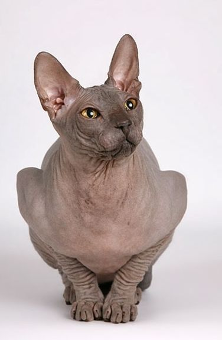
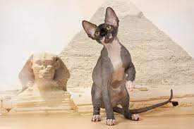
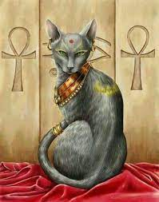

Сервал
Известно о представителях трёх видов из мелких диких кошачьих, живших в Древнем Египте.
Дикая ливийская, иначе африканская кошка или степная (Felis silvestris lybica) — наиболее распространённая. Подвид, который можно обнаружить в Африке, за исключением Сахары и тропических лесов, а также на Ближнем и Среднем Востоке. Её размер колеблется от 50 до 70 см, а вес — от 3 до 7 кг. Внешне напоминает короткошёрстную домашнюю кошку, но отличается более крупным размером и удлинёнными конечностями. Преимущественно ночное животное, охотящееся в сумерках или ночью. Днём прячется в норах или под деревьями, укрываясь от жары.
Сервал (Felis serval) — кошка родом из Нубии (её можно обнаружить от Юга Сахары до Южной Африки). Преимущественно ночное животное, живёт в саванне. Средний размер — примерно 70 см, вес колеблется от 14 до 18 кг, обладает приподнятым телом на длинных лапах. Шерсть покрыта пятнами дикого коричневого цвета, которые просветляются ближе к животу. У неё большие уши, маленькая голова и большие глаза.
Кошки в повседневной жизни
В древности египтяне называли кошку ономатопеей «миу», которая имеет транскрипцию «miw» для мужского рода и «miwt» для женского (в русском языке присутствует схожая ономатопея в глаголе «мяукать»).
Длительное время именно Египет считался местом одомашнивания дикой ливийской кошки, но сейчас учёные располагают свидетельствами того, что в регионе «Плодородного полумесяца» и на Кипре кошка была одомашнена намного ранее. Предположительно, одомашнивание кошки в Египте произошло в течение III тысячелетия до н. э. До того, как стать домашним любимцем, ценящимся за свою мягкость, грациозность и беззаботность, кошка, прежде всего, стала оберегающим животным. Охотясь на мелких грызунов, они оберегали амбары, где египтяне хранили свою провизию (прежде всего — пшеницу), жизненно важную для этого сельскохозяйственного народа. Охотясь на крыс, кошки устраняли источник серьёзных заболеваний (таких как чума). Наконец, охотясь на змей (обычно рогатых гадюк), они делали близлежащие окрестности более безопасными.
Тысячи мумий кошек, обнаруженных на кошачьих кладбищах, наводят нас на мысль о том, что они были наиболее популярными животными в Древнем Египте. Однако большое количество обнаруженных мумий кошек может также объясняться их малым размером (легче похоронить кошку, чем быка). Во дворцах кошки были домашними животными, которых содержали в роскоши. Когда кошка уходила из жизни, её хозяева в знак траура сбривали себе брови. Траур длился семьдесят дней, что соответствует срокам мумификации как человека, так и кошки. Кошка в виде статуэтки или рельефа, нанесённого на саркофаг, может «сопровождать» своего хозяина в загробную жизнь. Изображения кошки также можно найти на многочисленных вазах, драгоценностях и посуде, равно как и на рисунках (под местом женщины, как защитный символ).
Культ
С кошачьими в египетской мифологии ассоциировалось большое количество божеств. Со львицами отождествлялись Сехмет, Тефнут, Мафдет и нубийская Шесемтет. Многие боги, включая Амона, могли изображаться в образе сфинкса; некоторые — непосредственно как львы (например, двуглавый лев Акер). В 17-й главе «Книги мёртвых» один из важнейших богов египетского пантеона, бог солнца Ра, выступает в образе рыжего кота, ежедневно повергающего змея Апопа. Баст — богиня с головой кошки — изначально считалась оберегающей, воинственной львицей. Её образ с течением времени претерпел изменения: она начала отождествляться с приручёнными кошками, лояльными, но дикими.
Бубастис
Хотя культ кошек уже имел важное религиозное значение на заре становления Нового царства, он получил своё развитие, после того как фараон ливийского происхождения Шешонк I возвёл город Бубастис, главное место поклонения богини Бастет, расположенное на востоке дельты Нила, до статуса столицы. Баст стала очень популярной и почитаемой среди населения. Теперь же она стала олицетворять плодородие, материнство, оберег и благосклонность солнца — подобно Сехмет, она стала зваться оком Ра. Благодаря культу кошек, объединявшему тысячи почитателей и паломников, ежегодно на улицы Бубаста прибывало огромное количество людей. Геродот сообщает о «700 000 людей обоего пола, кроме детей», ежегодно посещавших центр поклонения Баст. Имя «Бубастис» стало другим именем Баст.
